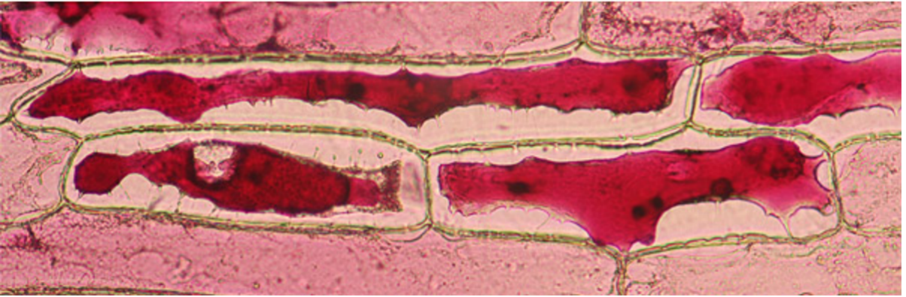
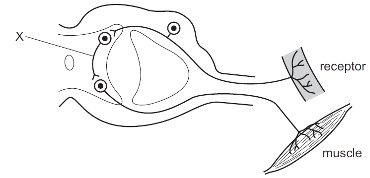
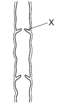
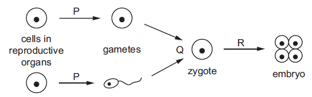
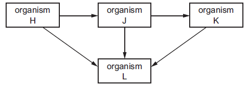

1. This is the process of _____
Water molecules move from a region of higher water potential to a region of lower water potential through a partially permeable membrane.
2. This is the definition of _____
The movement of nutrient molecules from the alimentary canal into the blood.
3. This is the definition of _____
The chemical reactions in cells that break down nutrient molecules and release energy for metabolism.
4. _____ means one of the thousands of microscopic tubes inside a kidney, where urine is made.
5. The following phenomenon in plant cells is _____
6. Reagent DCPIP is used to test _____
7. The specificity of an enzyme is that the enzyme binds one type of substrates due to the _____ shape of the active site with the substrate.
8. _____ is a disease caused by a bacterium which is transmitted in contaminated water.
9. This is the definition of _____
Removal of the nitrogen-containing part of amino acids to form urea.
10. The term _____ means a group of organisms that can reproduce to produce fertile offspring.
11. This is the definition of _____
All of the populations of all the different species in an ecosystem.
12. _____ is the small, circular molecules of DNA found in many prokaryotic cells.
13. _____ is extra oxygen needed after anaerobic respiration has taken place, in order to break down the lactic acid produced.
14. _____ means the part of a plant to which sucrose or amino acids are transported, and where they are used or stored.
15. _____ means automatically and rapidly integrating and coordinating stimuli with the responses of effectors.
16. _____ wall contains lignin, to provide support for the plant.
17. _____ is when water evaporates from the surfaces of the mesophyll cells into the air spaces, and then diffuses out of the leaves through the stomata as water vapour.
18. After pollination, _____ land on the stigma and begin to grow a pollen tube.
19. The process of converting nitrate ions to nitrogen gas is called _____
20. Variation in which there are distinct categories of phenotype, with no intermediates is called _____
21. The outer layer of tissue on a plant, as well as the outer layer of an animal's skin, is called _____
22. The tissue that covers a surface in an animal (for example, an epithelium covers the inside of the wall of the human alimentary canal) is called _____
23. The insoluble protein produced to form a mesh with the platelets during blood clotting is called _____
24. Hormone _____ is secreted by the pancreas, which increases blood glucose concentration.
25. _____ means two chromosomes that contain the same genes in the same position; have the same shape and size; one from the mother and one from the father.
26. Living animals release carbon dioxide. This is an example of which life process?
27. What is a role of water in digestion?
28. The lack of which component of a balanced diet will lead to the development of scurvy?
29. The diagram shows the structures in a reflex arc. What is X?
30. In a sperm cell, which structure contains enzymes that can digest the jelly coat of an egg cell?
31. What is the principal source of energy for most food chains?
32. Bacteria are useful for manufacturing products for human use. Which statement explains why they are useful?
33. An animal has four legs, hair and a tail. To which group of vertebrates does it belong?
34. What is an example of a tissue?
35. Dental decay is caused when bacteria break down sugars and produce acids. In which order are the parts of the teeth damaged by acid?
36. Which blood vessel delivers oxygenated blood to the heart muscles?
37. The diagram shows a section of a human vein. What is the function of the part labelled X?
38. Campylobacter is a bacterium that can cause food poisoning. Which word describes Campylobacter?
39. What is the approximate percentage of oxygen in expired air?
40. Which statement about the formation of urea is correct?
41. Which endocrine gland secretes the hormone that stimulates the heartbeat?
42. The diagram represents processes in sexual reproduction. Which processes are represented by the letters P, Q and R?
43. Letters H, J, K and L show the organisms that make up a simple food web. Which row identifies the types of organism shown in the food web?
44. What are undesirable effects of deforestation?
45. Starch is digested by amylase in the mouth, but it is not digested in the stomach. What is the reason for this?
46. What is a function of some white blood cells?
47. Which statement applies to respiration?
48. What type of cell must an organ contain to detect a stimulus?
49. Which statement about the process of asexual reproduction is correct?
50. Which description of a population is correct?